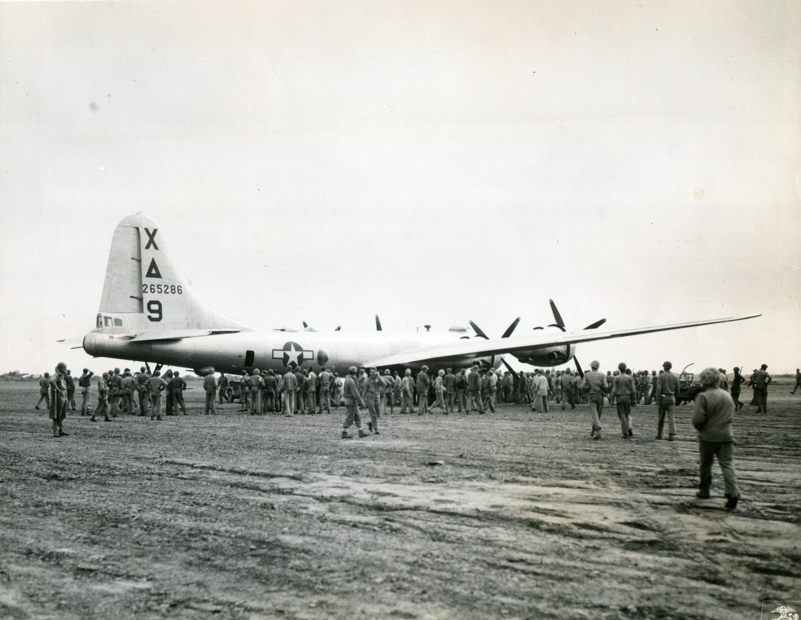

Spring Missions
Marianas · April–May 1945
April opened with guard duty, new stationery from Rosie, and a barracks radio that caught American music only at certain hours. Austin had five credited missions over Japan, earlier work on Japanese-held islands, and one long flight that earned no credit when the navigator got lost in weather. A new navigator, bombardier, and airplane commander came aboard; the enlisted men and Austin were what remained of the Alamogordo crew.
Dear Mother & Sister, […] On the last mission we were on we had a little difficulty. On account of Bad Weather mostly our navigator got lost & we didn't find the target in time to bomb with the rest of our planes. So we didn't get to go over the target although we flew our 15 hours we didn't get credit for the mission either. Our navigator was fined $150. And put on a replacement crew. We have a new navigator, bombardier, and airplane commander now. The enlisted men and myself are the only one left of our old Alamagorda crew. […] I have 5 missions in now over Japan. Several missions on Jap held islands & then this one mission that we got no credit for since the navigator got lost. Boy we thought we were right over Tokyo but it was so cloudy we could tell where we were. Solong now, Love Austin
On 8 April he was back from Iwo Jima. Fighter escort had appeared over Japan for the first time on that trip; a flak hole through their wing did not stop the airplane; another B-29 with its tail clipped in a mid-air fight still made Iwo on two engines. He spent most of the layover in the airplane. The island was coming under control, he wrote, though Japanese soldiers were still around.

Dear Mother & Sister, Suppose you haven't heard from me in a few days this time. Got back from Iwo Jima this morning. I received a letter from you today. They come pretty regular. Guess you heard where we had fighter escort over Japan for the first time. We were really glad to see some of our own fighters around. Well, I really saw some damaged airplanes on this trip. We got one hole through our wing which didn't hurt anything. Boy these planes will fly with big hunks them gone too. One plane had his tale clipped off in a mid-air crash with a Jap fighter. He had to stop 2 engines & still made it back to Iwo. I spent most of the time in the plane at Iwo. Things and getting under control now although there are still several Japs around. […] Love to all, Austin
Historical note — Iwo Jima as an emergency fieldU.S. forces secured Iwo Jima in March 1945 after a costly battle. For Marianas B-29 crews the island’s airfields — among them Motoyama — became emergency landing grounds roughly halfway home from Japan: damaged airplanes, wounded men, and fuel emergencies that would otherwise have meant ditching in the ocean. VII Fighter Command P-51s based on Iwo also began escorting some daylight Superfortress missions. Austin’s 8 April letter is the first in the file that puts him on the ground there.
Mid-April brought a Tokyo burnout raid he missed when instruments failed on the taxiway, then another abort when hydraulics and an exhaust stack quit in turn — bombs jettisoned in the ocean, the field suddenly lonely. On the 18th he was sorry to hear of President Roosevelt’s death. Mission headings in the letters climbed through seven, eight, and nine by month’s end.
Dear Mother and all, Received a nice letter from you and sister this morning with some clippings also. Got back from the mission last nite around 11 pm. We get up at 2:30 the morning of the mission and land around 11 pm. The news is on now and I heard about our strike on the Jap airfield on Kyushu. The war in Europe sounds one sided now. Hope they soon get that finished up. Was alfully sorry to hear about President Roosevelt's death. […] Love, Austin
Historical note — April 1945Franklin D. Roosevelt died at Warm Springs, Georgia, on 12 April 1945; Harry S. Truman became president. In Europe, Allied armies were deep into Germany. In the Pacific, B-29s struck Japanese airfields on Kyushu in support of the Okinawa campaign as well as continuing city and industrial targets. Austin heard both theaters on the barracks radio between fifteen-hour missions.
On May Day he corrected a Lauderdale County clipping about another airplane on the field: City of Memphis, commanded by Lt. Handwerker of Memphis. The paper, he wrote, had talked up a colonel who had nothing to do with that plane or its name. His own ship’s name — City of Charlottesville — would be painted on a week later.
Dear Mother And Sis, […] Maby you saw the write-up in the paper a few days ago about the B-29, The City of Memphis!! It's here on this field and Lt. Handwerker is the Airplane Commander. He is from Memphis. The paper kinda mis-represented the facts and all it talked about was some Colonel from Memphis who had nothing to do with that plane -- or with naming it. […] Love, Austin
Early May the radio carried word of Hitler’s and Goebbels’s deaths and of German surrender in Italy. On 8 May — V-E Day — he wrote after a practice bombing trip to a Japanese-held island, waiting for Truman’s evening talk. The airplane now wore a name: City of Charlottesville, Virginia, with a bomb painted for each mission and three Japanese flags for fighters the tail gunner had claimed.
Hello again! […] We bombed the Japanese airfields again. We were attacked by a few fighters but they weren't too sharp. […] The news sounded grand. We listened to the news on the way to Japan and heard of Hitler's and Goebels' death & also of the surrender of the German army in Italy & Southern Austria. Hope the peace conference is doing a good job. […] Love to all; Austin
Dearest Mother & All, Today is V-E day - Was sure glad to hear the news on the radio. Mr. Truman is supposed to talk tonight at 11PM Don't know if we will be awake to hear him or not. Today we bombed a Jap island for practice. Had a very nice trip & got back about 3PM. We had chicken which was very good. […] We have our name painted on the plane now. Also a bomb for each mission & 3 Jap flags for 3 fighter planes our tail gunner shot down. Also each of our own names under our positions. The name of our plane is "City of Charlottesville" (Virginia) Well I better get off to sleep now. Good night to all. Love & kisses, Austin
Historical note — V-E Day as he heard itGerman forces in Italy surrendered in early May. Reports of Hitler’s death (30 April) and of Joseph Goebbels’s death reached Allied troops by radio in the first days of May. Victory in Europe was proclaimed on 8 May 1945. On Guam the war with Japan continued without pause. Austin’s V-E letter puts the celebration in one paragraph and a practice bombing mission in the next. City of Charlottesville was the Cook-crew airplane he would fly for most of his early tour; a different Memphis-named Superfortress on the same field belonged to another commander.